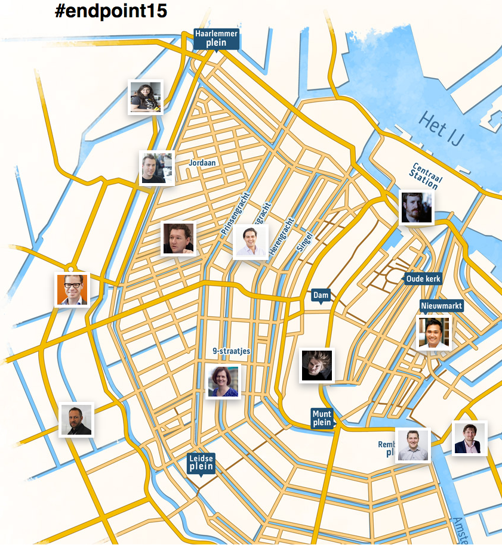
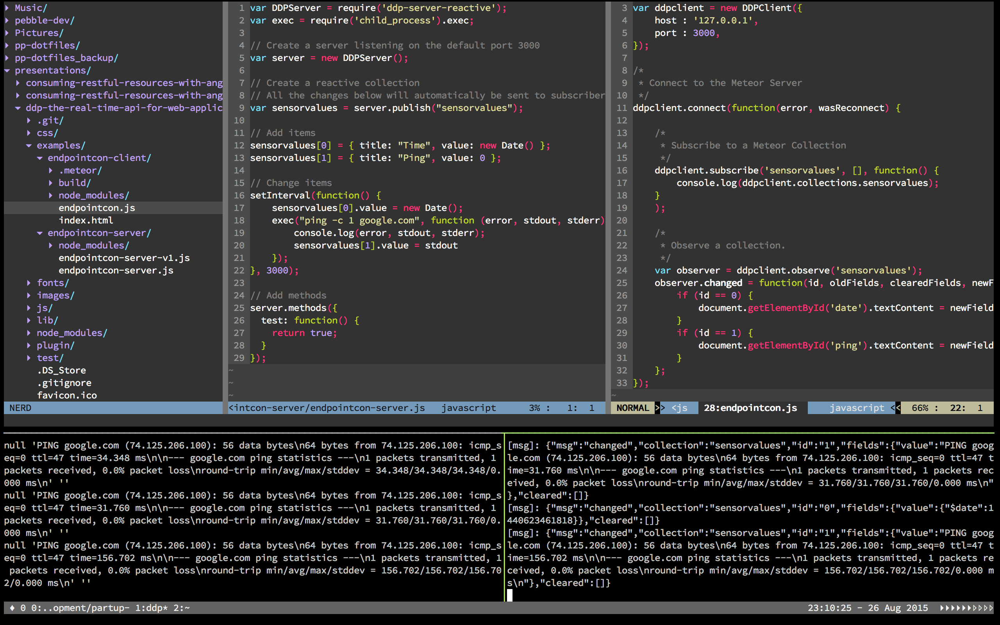

DDP: the real-time API for web applications

- DDP?
- Meteor?
- Websockets?
overview
Distributed Data Protocol
(as spec)
"a protocol between client and server that supports RPC, the client subscribing to documents and the server sending changes about those documents"
Distributed Data Protocol
(as matt)
"a chance to define interoperability in realtime websockets, as http did for request response"
Distributed Data Protocol
- Coined March 21, 2012 by Matt Debergalis
- Pub Sub and Remote Procedure Calls
- No REST / Request-Response
- Data on the wire
endpoint15.meteor.com
DDP spec
- Connection
- Managing Data
- Remote Procedure Calls
- Errors
DDP spec
Connection
CLIENT SERVER
=> connect
<= connected
<= failed
=> ping
<= pong
DDP spec
Managing Data
CLIENT SERVER
=> sub
<= added
<= added
<= ready
<= changed
<= removed
=> unsub
DDP spec
Remote Procedure Calls
CLIENT SERVER
=> method
<= result
<= changed
<= updated
=> unsub
DDP spec
errors
{
"msg": "result",
"id": "1",
"error": {
"error": 404,
"reason": "Method not found",
"message": "Method not found [404]",
"errorType": "Method.Error"
}
}
Code Examples

Code Examples

Uses
- real-time web applications
- real-time mobile applications
- internet of things
Scaling
- limited to max connections per box
- loadbalancing requires session affinity
Pushing the web forward
- Agree upon a standard
- Create DDP debug tooling
Thank you for your attention
https://github.com/peterpeerdeman/ddp-the-real-time-api-for-web-applications